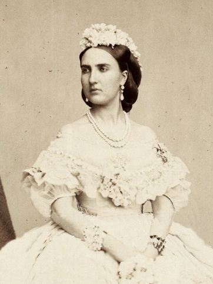

La emperatriz llego a Mexico

Carlota, cuyo nombre en francés era Charlotte, llegó al puerto de Veracruz con Maximiliano de Habsburgo en la fragata Novara el 28 de mayo de 1864, y ambos fueron coronados en la Catedral de la Ciudad de México en abril de ese mismo año, para encabezar lo que ya era entonces el Segundo Imperio Mexicano (1863-1867). Carlota Amalia de México y Maximiliano escogieron el Castillo de Chapultepec como su residencia oficial.
La Emperatriz Carlota, durante las innumerables ausencias de Maximiliano, en varias ocasiones asumió y encabezó la regencia del Imperio. Por sus ideas liberales y posturas radicales se le conoció como “La Roja”.Ella promulgo la abolición de los castigos corporales y estableció justas limitaciones a las terribles jornadas de trabajo de la época. Impulsó de manera decidida empresas como los ferrocarriles y los transportes de vapor; sobre todo, empresas de beneficencia para los más necesitados. En ese entonces también mandó remodelar integralmente el Zócalo de la capital, y fundó un conservatorio de música y una academia de pintura, entre otros espacios culturales.
Los emperadores tuvieron discrepancias con los conservadores Carlota y Maximiliano nunca lograron la aceptación de sus políticas liberales por parte de los conservadores que fueron finalmente quienes habían realizado todas las gestiones para su llegada a México.Francia abandonó a Carlota y Maximiliano.En 1866, Francia, bajo la presión de Prusia y sobre todo de Estados Unidos, abandonó políticamente a los emperadores mexicanos. Retiraron a gran parte de sus ejércitos de territorio nacional, y Benito Juárez y sus huestes empezaron entonces a ganar terreno para recuperar el país.
A principios de la década de 1860, Napoleón III de Francia inició la Intervención francesa en México. Francia, impaciente en convertir a México en un Estado satélite, buscó un testaferro adecuado para servir como el emperador nominal. El archiduque Fernando Maximiliano de Habsburgo aceptó la corona mexicana el 10 de abril de 1864 en el Palacio de Miramar, embarcándose en Triestre la nueva pareja imperial rumbo al Puerto de Veracruz a bordo de la fragata Novara que fondeó en la bahía del puerto. En la Ciudad de México escogieron como Residencia Imperial el Castillo de Chapultepec.
Imperio Caido
 El Segundo Imperio mexicano (1864-1867), fue breve y agitado debido a los choques entre la guerrilla republicana y los ejércitos imperiales mexicanos y franceses. Desde el principio los emperadores no pudieron equilibrar sus políticas liberales con la plataforma de los intereses conservadores que les habían llamado a gobernar.
El Segundo Imperio mexicano (1864-1867), fue breve y agitado debido a los choques entre la guerrilla republicana y los ejércitos imperiales mexicanos y franceses. Desde el principio los emperadores no pudieron equilibrar sus políticas liberales con la plataforma de los intereses conservadores que les habían llamado a gobernar.
Tan solo pocos meses después de la coronación, Napoleón III comenzó a señalar su abandono a Maximiliano. En 1866 Francia, bajo la amenaza de Prusia, la presión de los Estados Unidos y especialmente las derrotas que sufrían frente a los guerrilleros de Benito Juárez, retiró sus tropas. Este obstáculo estratégico fue un golpe fatal a la monarquía mexicana y el Imperio se vino abajo. La situación fue exacerbada por un bloqueo de los Estados Unidos que impidió acudir a los refuerzos franceses.
La emperatriz Carlota Amalia, que ya se había destacado como atrevida viajera yendo a la Península de Yucatán para conocer a los mayas y las ruinas de Uxmal en 1865, decidió cruzar el océano Atlántico en búsqueda de ayuda en Europa en una tentativa desesperada de salvar el trono de su marido, entrevistándose con la nobleza europea en París y Viena, a quienes recordaba en vano el compromiso contraído cuatro años antes; pero el poco éxito de su petición pudo ser una de las razones por las que comenzó a mostrar síntomas de desequilibrio mental, ayudado por los continuos desplantes del emperador francés Napoleón III.En una de esas entrevistas, empezó a mostrar alteraciones en su intelecto e inclusive mencionando que la querían envenenar, llegando a tomar el agua de las fuentes públicas de Roma.
Fallecimiento
Carlota falleció víctima de una neumonía causada por influenza el 19 de enero de 1927, con 86 años de edad, a las 7 de la mañana en el Château de Bouchout, Bruselas. Tras su muerte, las Cámaras de Bélgica levantaron sus sesiones en señal de duelo; se guardó luto en la corte por diez días; expusieron su cuerpo en la Cámara Imperial de Bouchout, sobre un lecho de roble cubierto por rosas y cyclaminos y un baldaquino azul celeste. La familia real veló junto a ella. Al día siguiente se realizó el funeral, su cuerpo fue trasladado a la iglesia parroquial de Meysse en un carro adornado por las armas imperiales, y seguida por el rey Alberto I, los príncipes Leopoldo y Carlos, el conde de Mérode, el general Hanatiau y el barón de Goffinet. Por su parte, la reina Isabel, las princesas, la duquesa de Vendôme, la princesa Genoveva de Orleans y la condesa de Chaponay la esperaban en la iglesia. La bendición fue dada por el cardenal Mercier. Sobre su féretro se leia:
“SU MAJESTAD LA EMPERATRIZ MARÍA AMALIA CARLOTA VICTORIA CLEMENTINA LEOPOLDINA, PRINCESA DE BÉLGICA. NACIÓ EN LAEKEN EL 8 DE JULIO DE 1840, FALLECIÓ EN EL CASTILLO DE BOUCHOUT EL 19 DE ENERO DE 1927, VIUDA DE SU MAJESTAD IMPERIAL EL ARCHIDUQUE MAXIMILIANO DE AUSTRIA, EMPERADOR DE MÉXICO”